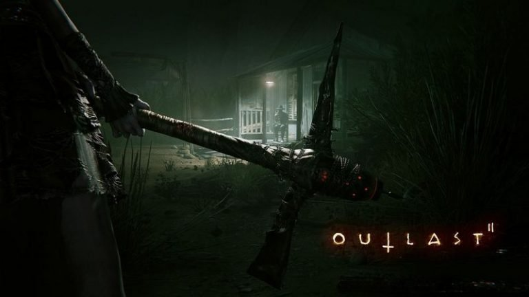
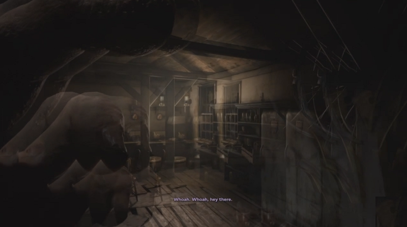
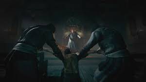
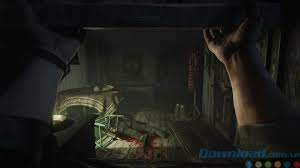

Tình trạng: CÒN HÀNG
Mã sản phẩm: 621859641
Thể loại: Action
250.000VNĐ
Mô tả
Chi tiết sản phẩm
Mô tả
Outlast 2 là một trò chơi kinh dị sinh tồn góc nhìn thứ nhất được phát triển bởi Red Barrels. Nó là phần tiếp theo của game Outlast, mô tả một nhà báo tên là Blake Langermann, cùng với vợ tên Lynn, lang thang trên sa mạc Arizona để khám phá vụ án mạng về một phụ nữ mang thai được biết đến như Jane Doe. Blake và Lynn lạc nhau trong một vụ tai nạn trực thăng, và Blake đã tìm thấy vợ mình trong khi đi qua một ngôi làng hẻo lánh là nơi sinh sống của một giáo phái tin rằng sự kết thúc của thế giới đang đe dọa họ.

Nội dung
OutLast 2 là một một game kinh dị sinh tồn góc nhìn thứ 1, giống như những người tiền nhiệm Outlast và Outlast: Whistleblower, có chế độ chơi đơn. Nó được thiết lập tại Bắc Arizona. Trò chơi vẫn tiếp tục với thể loại như phần trước. Người chơi điều khiển một phóng viên điều tra Blake Langermann, người điều tra một khu vực nông thôn đổ nát ở Supai, gần rìa phía tây của cao nguyên Colorado.

Langermann không thể chiến đấu ngoại trừ các cảnh trong kịch bản, nhưng phải chạy và trốn. Anh ấy cũng đeo kính, mà sẽ hạn chế tầm nhìn của người chơi nếu chúng rơi ra. Người chơi có thể đi thấp, chạy, nhảy, đi, nhảy,trượt và leo như các phần đầu tiên, và có thể trốn trong tủ khóa, thùng, tủ, giường, hồ nước, cỏ cao, cánh đồng ngô và bên trong của những ngôi nhà. Anh ta có một thước đo sức chịu đựng hạn chế và phải chú ý thời gian anh ta chạy, vì sợ rằng nó trở nên cạn kiệt và khiến ta di chuyển chậm hơn.

Langermann chỉ sở hữu một cái máy quay, có chế độ nhìn đêm, nhưng pin của máy quay phim sẽ cạn khi sử dụng chế độ nhìn đêm. So với trò chơi đầu tiên, Langermann với tư cách là người quay phim có nghĩa là anh ta mang theo một chiếc máy ảnh tiên tiến hơn, có cảnh quay rõ hơn, thu phóng và có một cái micrô xịn có thể được sử dụng để phát hiện tiếng bước chân và các tiếng ồn khác. Người chơi được trang bị hệ thống kho đồ hiển thị số lượng cảnh quay được ghi trên máy ảnh và các vật phẩm mà họ đang mang theo. Pin dự phòng phù hợp cho máy quay phim và bộ dụng cụ y tế để hồi máu được để rãi rác trong suốt trò chơi.

Cấu hình
• Minimum:
o OS: Windows Vista / 7 / 8 / 10, 64-bits
o Processor: Intel Core i3-530
o Memory: 4 GB RAM
o Graphics: 1GB VRAM, NVIDIA Geforce GTX 260 / ATI Radeon HD 4870
o DirectX: Version 10
o Storage: 30 GB available space
o Sound Card: DirectX Compatible
o Additional Notes: Targetting 720p @ 30 fps
 Trang chủ
Sản Phẩm
Đăng nhập
Trang chủ
Sản Phẩm
Đăng nhập